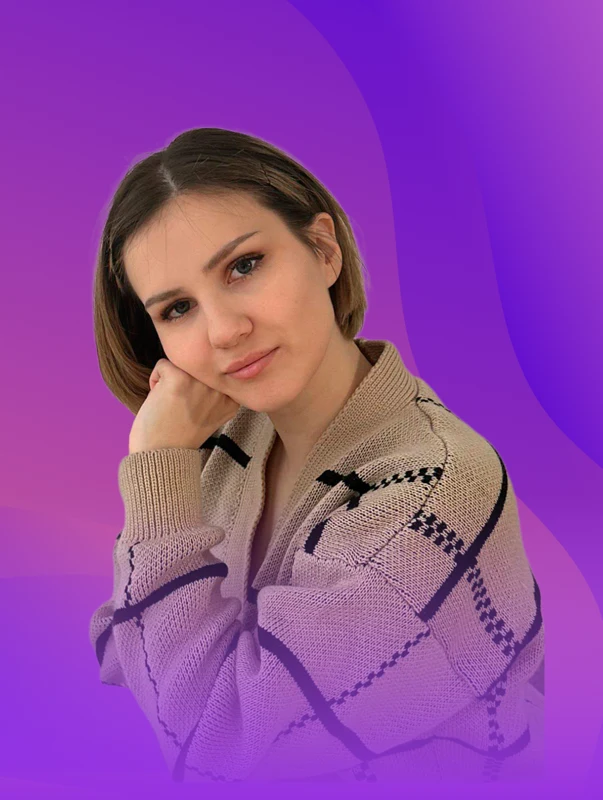
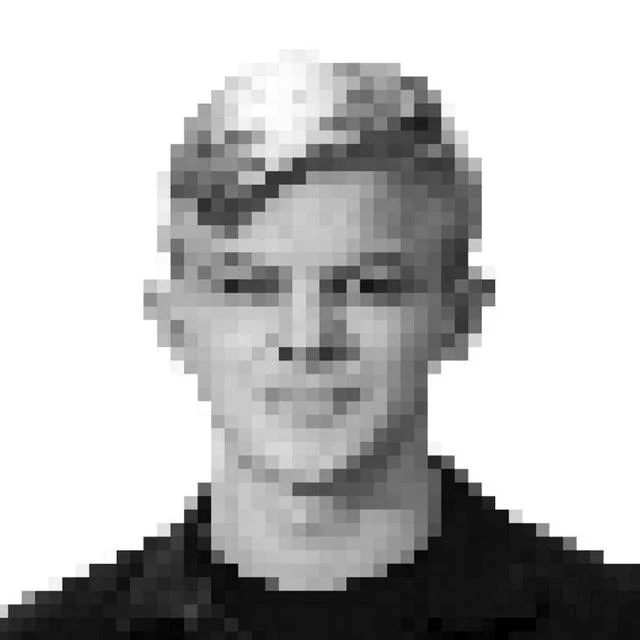

Прикладные задачи
Промышленный и предметный дизайн, CAD, сканирование, прототипирование и аддитивное производство.
 ТехнопаркДизайн и инжинирингОбсудить задачу
ТехнопаркДизайн и инжинирингОбсудить задачу Технопарк РГСУ / Лаборатория
Лаборатория промышленного дизайна и инжиниринга объединяет разработку изделий, цифровые технологии и практическое обучение. Работаем с задачами организаций, студенческими проектами и экспериментальными образцами.
Три стороны одной работы
Промышленный и предметный дизайн, CAD, сканирование, прототипирование и аддитивное производство.
Учебные кейсы и участие студентов в работе СКБ с понятными этапами и результатом.
Совместные разработки, проверка конструктивных решений и подготовка экспериментальных образцов.
Люди лаборатории
Дизайнеры, инженеры и специалисты по аддитивным технологиям работают вместе со студентами над реальными задачами.

Заведующая лабораторией
Аддитивные технологии, 3D-сканирование и цифровое моделирование.

Руководитель Проектного центра «Технопарк РГСУ»
Промышленный дизайн, реверс-инжиниринг и инженерное образование.
3D-художник
Дизайнер
Инженер, робототехник
3D-печать
Свяжитесь с командой, чтобы согласовать встречу или обсудить проект дистанционно.
Контакты лаборатории ↗Страница в структуре Технопарка